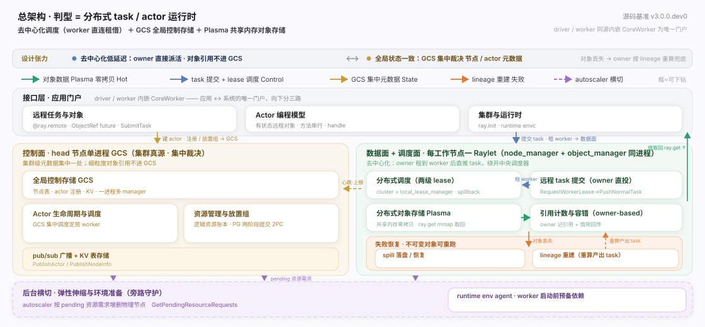
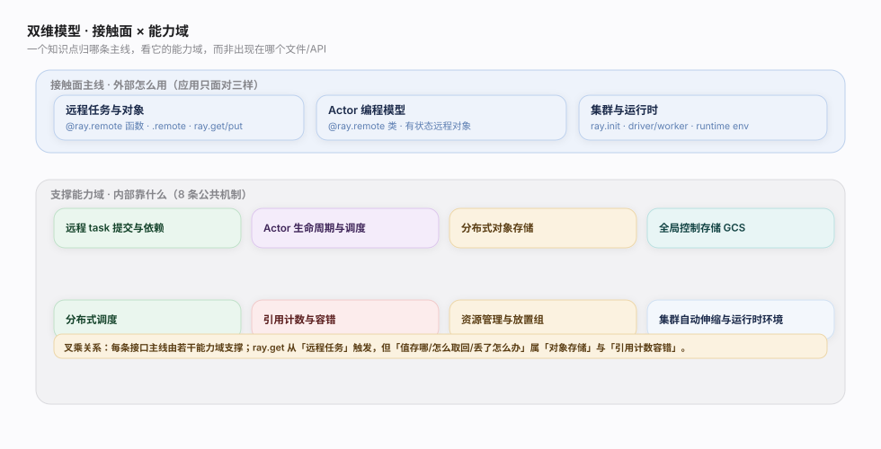
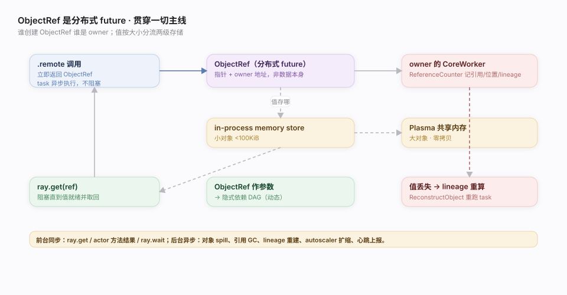
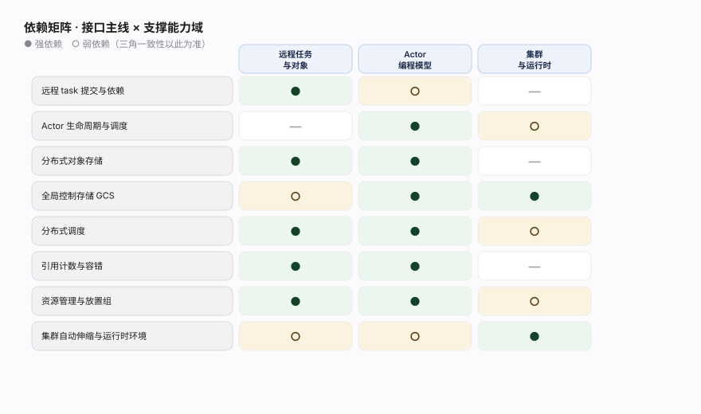
github.com/ray-project/ray（commit 2a70ac4，C++ 核心在 src/ray/、Python 前端在 python/ray/）。在原型库属新家族（分布式计算框架 / 通用分布式运行时，family 11），走元模式判型（接触面 × 能力域 × 执行时机）。灵魂三条：共享内存对象存储（Plasma）、owner-based 分布式引用计数与 lineage 重建、去中心化（worker lease）调度。max_direct_call_object_size=100KiB（ray_config_def.h:245）：小返回值走 in-process memory store 免 Plasma IPC，大对象进共享内存零拷贝。避免海量中等对象刚好卡在阈值上抖动。SpillObjectUptoMaxThroughput spill 到磁盘/远端；给足对象存储内存或配好 spill 目录，避免 spill 风暴拖慢。ray.get 前尽量让依赖对象与消费 task 同节点，减少 Pull 跨网。max_concurrency 或 async actor。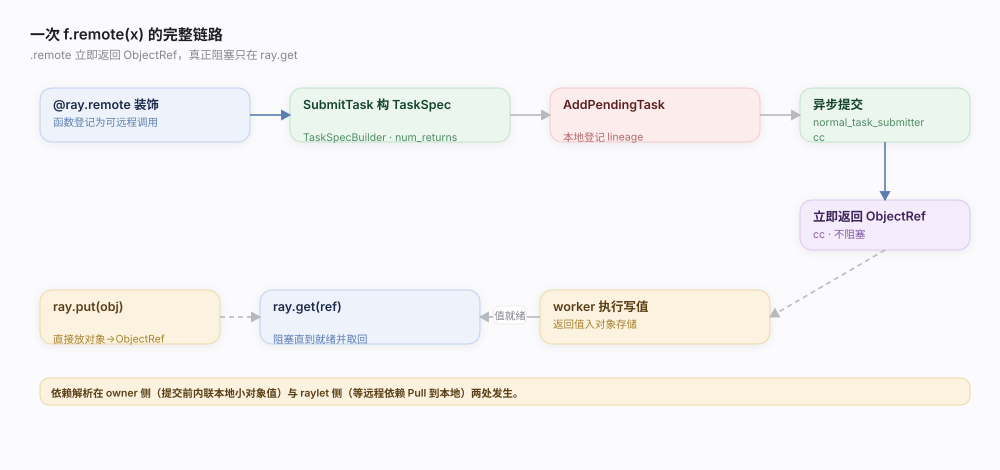
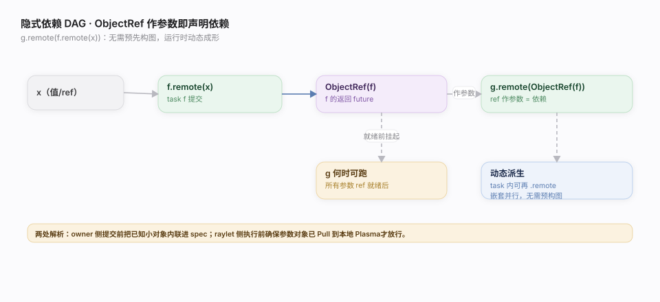
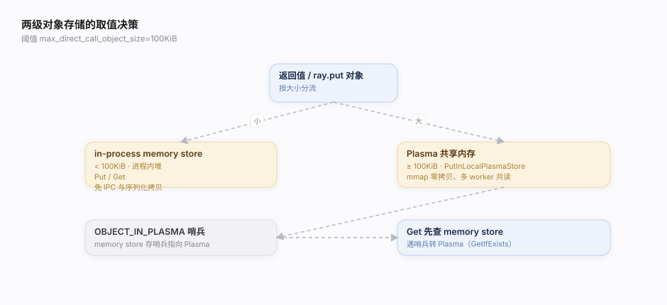
ObjectRef（分布式 future） 串起数据流。这是 task/actor 二元模型里"无状态"的一半，也是理解 ObjectRef 贯穿层的入口。核实基准 src/ray/core_worker/core_worker.cc（commit 2a70ac4）。.remote 立即返回 ObjectRef（分布式 future），task 异步执行、以 ObjectRef 作参数隐式成 DAG，值按大小分流到 in-process/Plasma 两级存储，ray.get 才是唯一的阻塞点。ray.get([r1,r2,...]) 或 ray.wait 流式消费，避免串行阻塞。ray.put 大对象一次、多 task 共享：省去每次序列化。num_returns 与生成器：返回大量小对象时用 num_returns="dynamic" 或 streaming generator 控背压。.remote 会阻塞到执行完" → 只返回 ObjectRef，立即返回，真正等待在 ray.get。ray.get 里传 list 会逐个等" → 一次性等整批，且底层可并行 Pull。| 技术点 | 机制 | 源码锚点 |
|---|---|---|
| 任务提交 | TaskSpecBuilder 组 spec → AddPendingTask → 异步 submit | core_worker.cc:1995、task_manager.cc:319 |
| 立即返回 future | SubmitTask 同步返回 returned_refs | core_worker.cc:2064 |
| ray.put | 直接放对象、返回 owned ObjectRef | core_worker.cc:1055 |
| ray.get 取回 | 先 memory store 后 Plasma，阻塞等就绪 | core_worker.cc:1326、memory_store.cc:247 |
| ray.wait | 等一批 ref 中 N 个就绪 | core_worker.cc:1509 |
| 隐式依赖 | ObjectRef 作参数 = 声明数据依赖 | normal_task_submitter.cc（依赖解析） |
| 重试语义 | max_retries、retry_exceptions 写入 spec | core_worker.cc:2058 |
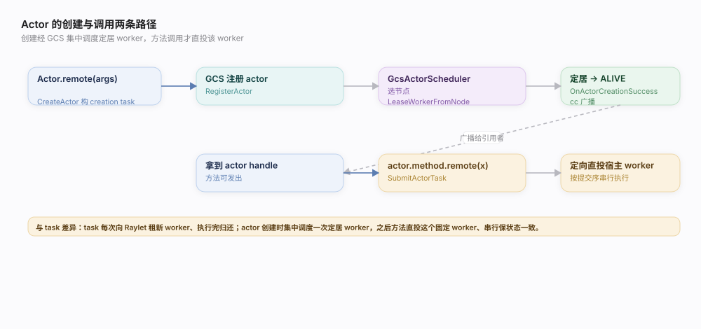
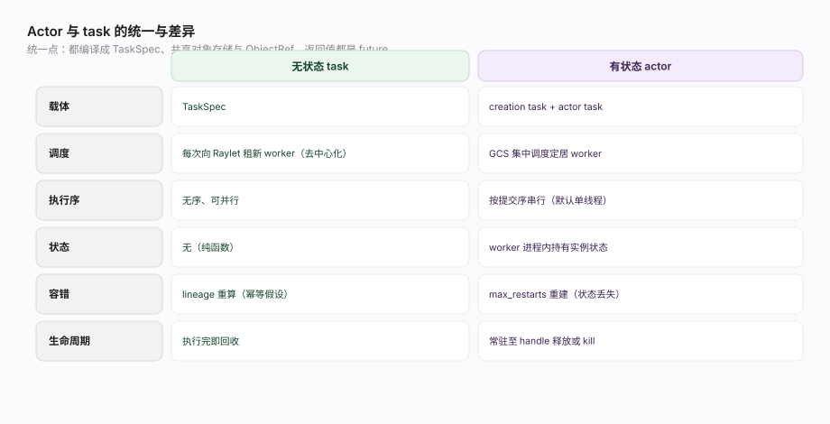
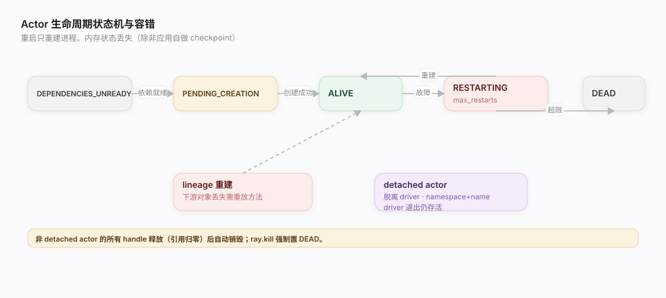
@ray.remote 装饰类得到一个 actor——一个持有状态、生命周期独立、方法在固定 worker 上串行执行的远程对象。它把"有状态服务/参数服务器/模型副本"这类负载纳入 Ray。核实基准 src/ray/core_worker/core_worker.cc、src/ray/gcs/actor/（commit 2a70ac4）。max_concurrency 开线程池、或 async actor 用协程处理 IO-bound。| 技术点 | 机制 | 源码锚点 |
|---|---|---|
| 创建 actor | 构 creation task + GCS 注册 | core_worker.cc:2076、gcs_actor_manager.cc:660 |
| GCS 处理创建 | 选节点、租 worker、置 ALIVE | gcs_actor_manager.cc:794、gcs_actor_scheduler.cc:50/235 |
| 方法调用 | SubmitActorTask 定向直投、串行 | core_worker.cc:2415 |
| 重启容错 | max_restarts 重建 | gcs_actor_manager.cc:1444 |
| lineage 重建 actor | 为重放方法而重建 | gcs_actor_manager.cc:340 |
| 创建成功广播 | 通知所有 handle 持有者 | gcs_actor_manager.cc:1652 |
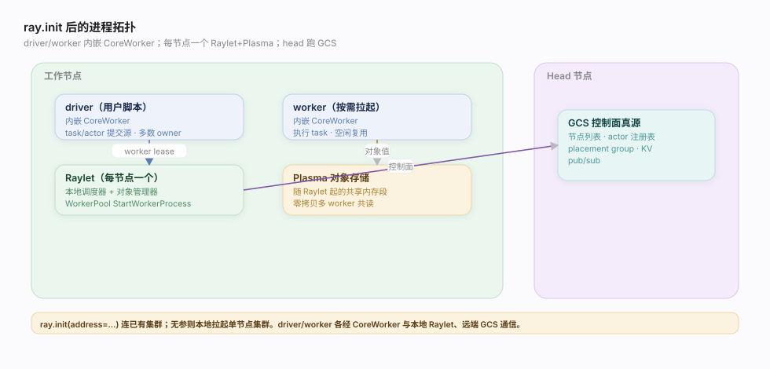
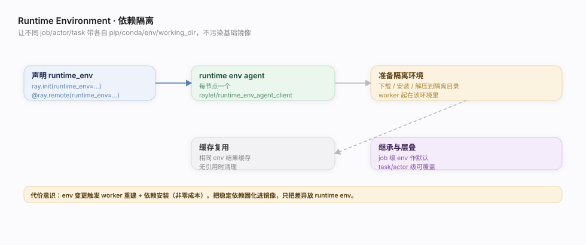
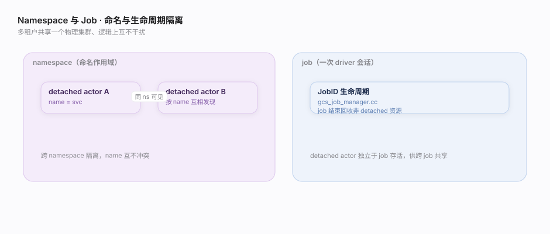
ray.init 连上（或拉起）集群，确立 driver / worker 进程模型，用 runtime env 隔离依赖、用 namespace 隔离命名。这条主线管"程序在哪跑、依赖怎么带、名字怎么分隔"，是另外两条接口主线的运行容器。核实基准 src/ray/core_worker/、python/ray/（commit 2a70ac4）。ray.init 拉起「driver + 每节点 Raylet/Plasma + 按需 worker + head 的 GCS」进程拓扑，用 runtime env 做依赖隔离、namespace/job 做命名与生命周期隔离——它是另外两条接口主线的运行容器。ray.init 资源声明：显式给 num_cpus/num_gpus 让本地集群资源准确。| 技术点 | 机制 | 源码锚点 |
|---|---|---|
| 集群连接/拉起 | ray.init 连或起集群，建 driver CoreWorker | python/ray/、core_worker.cc |
| worker 池 | Raylet 按需启动、空闲复用 | worker_pool.cc:462/1123/1437 |
| runtime env | agent 预备隔离依赖环境 | raylet/runtime_env_agent_client.* |
| job 管理 | JobID 生命周期、资源归属 | gcs/gcs_job_manager.cc |
| namespace | actor 命名作用域 | gcs/actor/gcs_actor_manager.cc |
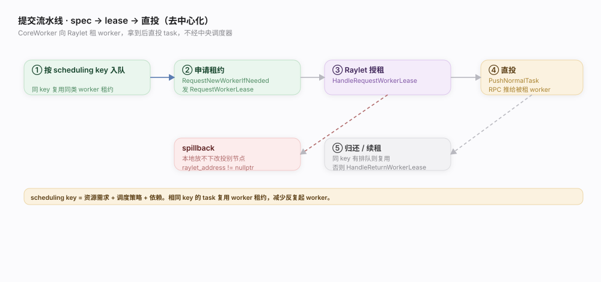
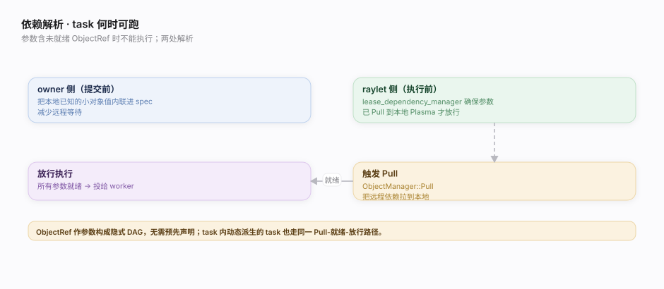
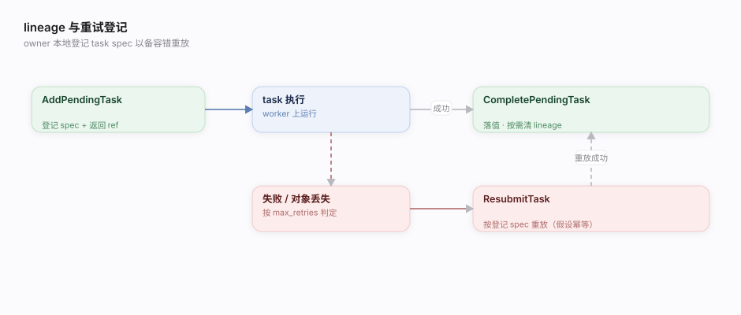
.remote 从"构建规格"落到"某个 worker 上真正执行"的完整机制。核心是 Ray 的去中心化 worker-lease 调度：CoreWorker 直接向 Raylet 租 worker、拿到后直投 task，不经中央调度器。核实基准 src/ray/core_worker/task_submission/normal_task_submitter.cc、task_manager.cc（commit 2a70ac4）。max_retries 依赖 task 幂等假设；有副作用的 task 慎重设重试。max_retries 限制，且假设幂等。| 技术点 | 机制 | 源码锚点 |
|---|---|---|
| scheduling key 排队 | 按资源+策略+依赖归类复用租约 | normal_task_submitter.cc:34/67 |
| 申请 worker 租约 | RequestWorkerLease → Raylet | normal_task_submitter.cc:270、node_manager.cc:1890 |
| spillback | 本地不够转投别节点 raylet | normal_task_submitter.cc:314 |
| 直投执行 | PushNormalTask 绕过调度器 | normal_task_submitter.cc:515 |
| 依赖 Pull | 参数对象拉到本地才放行 | raylet/lease_dependency_manager、object_manager.cc:221 |
| lineage 登记/重放 | AddPendingTask / ResubmitTask | task_manager.cc:319/433 |
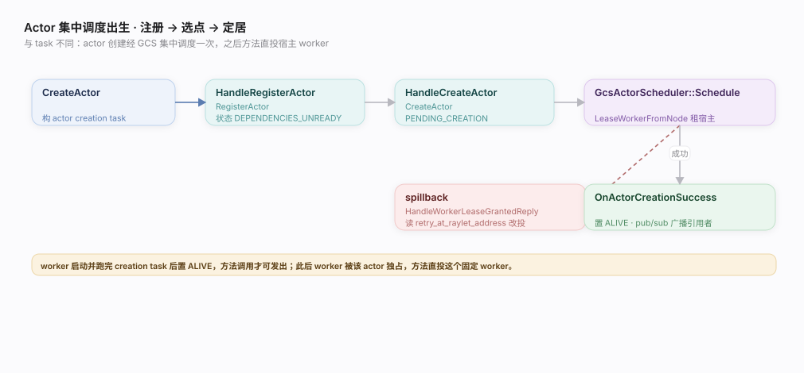
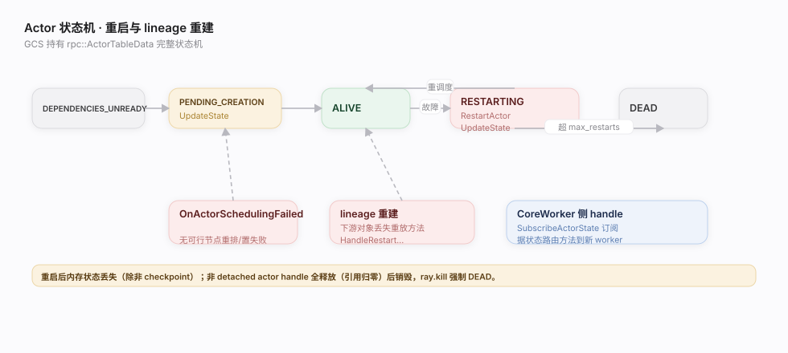
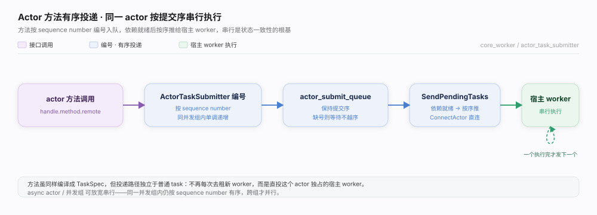
src/ray/gcs/actor/gcs_actor_manager.cc、gcs_actor_scheduler.cc、src/ray/core_worker/task_submission/actor_task_submitter.cc（commit 2a70ac4）。依赖「全局控制存储 GCS」（注册表与 pub/sub）、「分布式调度」（租 worker）、「引用计数与容错」（handle 引用驱动回收）。max_concurrency 开线程池处理阻塞调用，async actor 用协程处理海量 IO-bound 请求。scheduling_strategy（NodeAffinity/PlacementGroup）把 actor 定居到数据或 GPU 所在节点。| 技术点 | 机制 | 源码锚点 |
|---|---|---|
| 注册 actor | 落 GCS 注册表，DEPENDENCIES_UNREADY | gcs_actor_manager.cc:313/660 |
| 触发创建 | 依赖就绪 → PENDING_CREATION | gcs_actor_manager.cc:432/794/855 |
| 集中选点租 worker | Schedule → LeaseWorkerFromNode | gcs_actor_scheduler.cc:50/235 |
| actor spillback | 读 retry_at_raylet_address 改投 | gcs_actor_scheduler.cc:301/324 |
| 定居广播 ALIVE | OnActorCreationSuccess + pub/sub | gcs_actor_manager.cc:1652 |
| max_restarts 重启 | RestartActor → RESTARTING 重调度 | gcs_actor_manager.cc:1444/1533 |
| lineage 重建 actor | 为重放方法重建 | gcs_actor_manager.cc:340 |
| handle 状态订阅 | CoreWorker 侧路由方法 | actor_manager.cc:27/295 |
| 方法有序投递 | sequence number + submit queue | actor_task_submitter.cc:167/190/227 |
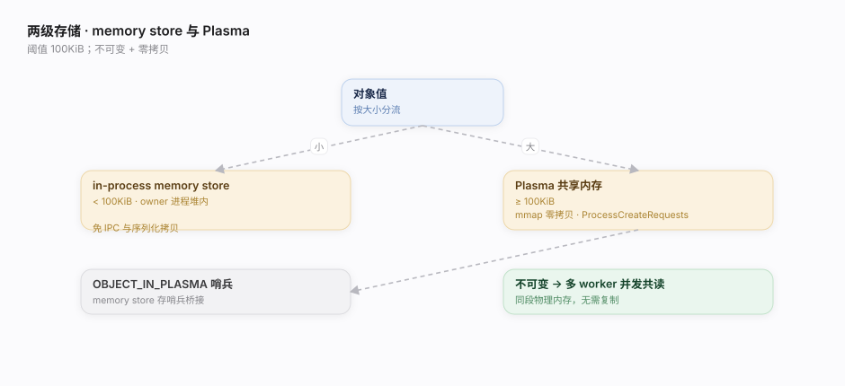
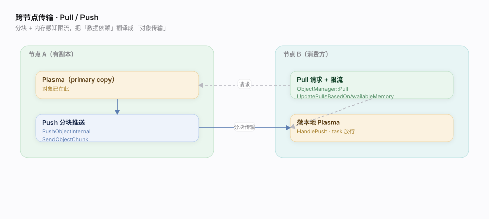
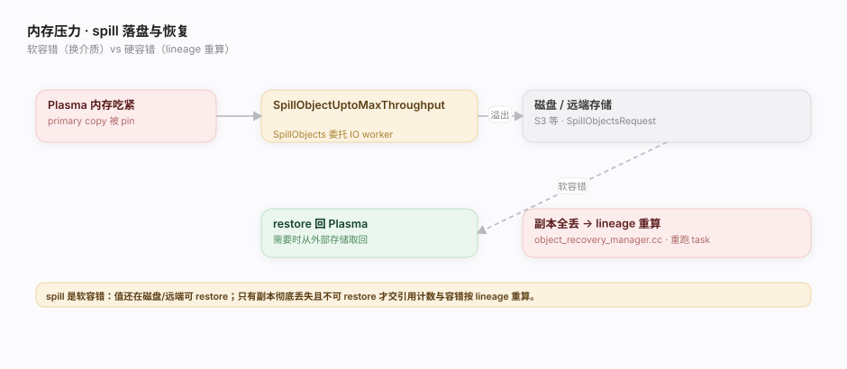
ObjectRef 指向的值到底存在哪、怎么在节点间搬运、内存满了怎么办。灵魂是每节点一份 Plasma 共享内存对象存储（随 Raylet 起），配合 CoreWorker 内的 in-process memory store 构成两级存储；跨节点靠 ObjectManager 的 Pull/Push。核实基准 src/ray/object_manager/plasma/store.cc、object_manager.cc、pull_manager.cc、src/ray/core_worker/store_provider/memory_store/memory_store.cc、src/ray/raylet/local_object_manager.cc（commit 2a70ac4）。被「远程任务与对象」「Actor」「引用计数与容错」强依赖。object_store_memory 给足；给 spill 配好本地盘或对象存储目录，避免 spill 风暴。ray.put 大对象一次、多 task 共享：省重复序列化；小对象别硬塞 Plasma（走 in-process 更快）。num_returns="dynamic" 控产出速率，避免 Plasma 被瞬时打满触发 spill。| 技术点 | 机制 | 源码锚点 |
|---|---|---|
| 两级分流阈值 | <100KiB in-process，否则 Plasma | ray_config_def.h:245 |
| memory store 存取 | 进程内小对象免 IPC | memory_store.cc:159/174/247 |
| Plasma 创建对象 | 共享内存分配 + mmap 零拷贝 | plasma/store.cc:174/509 |
| 大对象落本地 Plasma | PutInLocalPlasmaStore | core_worker.cc:1076 |
| Pull 拉取 + 限流 | 内存感知激活 pull bundle | object_manager.cc:221、pull_manager.cc:53/233 |
| Push 分块传输 | 主动分块推送 | object_manager.cc:369/493/536 |
| 应答远端 pull/push | HandlePull/HandlePush | object_manager.cc:591/664 |
| spill 落盘 | 内存压力下溢出到磁盘/远端 | local_object_manager.cc:145/253 |
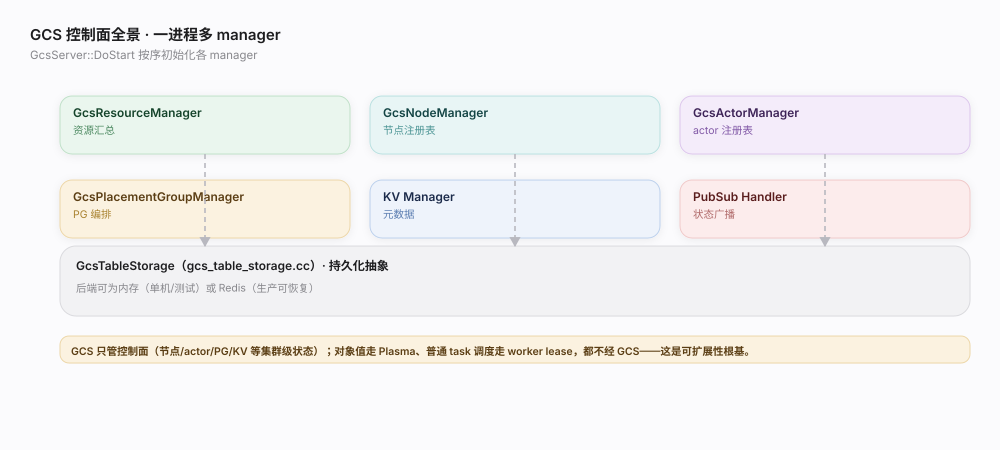
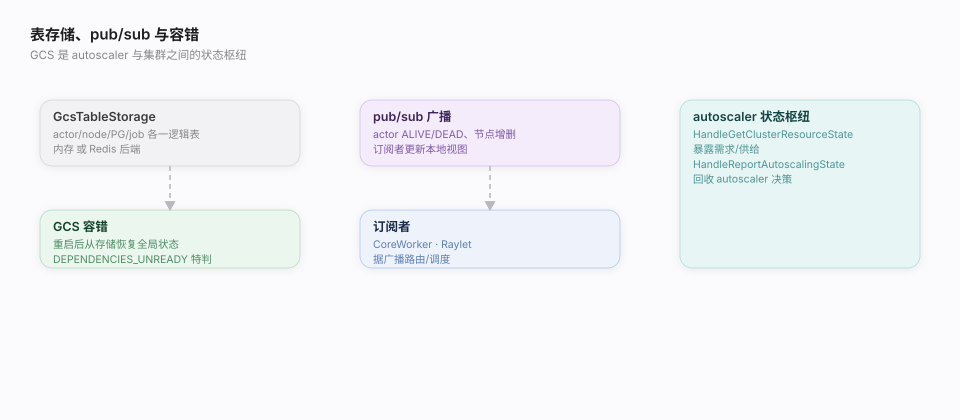
src/ray/gcs/gcs_server.cc、gcs_node_manager.cc、gcs_table_storage.cc、gcs/actor/gcs_actor_manager.cc（commit 2a70ac4）。被三条接口主线与多数支撑域依赖。| 技术点 | 机制 | 源码锚点 |
|---|---|---|
| GCS 启动编排 | DoStart 按序初始化各 manager | gcs_server.cc:314 |
| 资源汇总 | GcsResourceManager 聚合上报 | gcs_server.cc:317/489 |
| 节点注册表 | RegisterNode/AddNode/Drain | gcs_node_manager.cc:102/172/216/572 |
| actor 注册表 | InitGcsActorManager | gcs_server.cc:577 |
| placement group | InitGcsPlacementGroupManager | gcs_server.cc:636 |
| KV 元数据 | InitKVManager | gcs_server.cc:746 |
| pub/sub 广播 | InitPubSubHandler | gcs_server.cc:813 |
| autoscaler 状态枢纽 | Get/Report 集群资源状态 | gcs_autoscaler_state_manager.cc:51/67 |
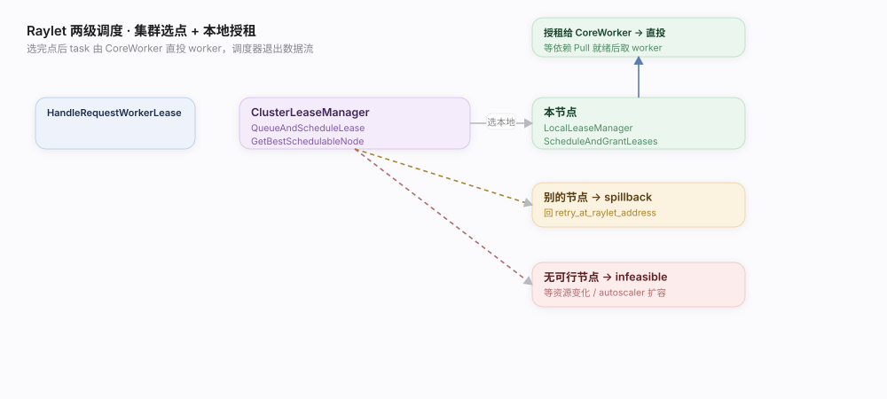
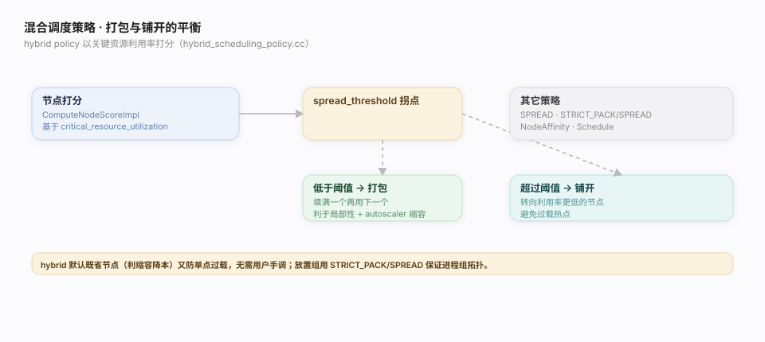
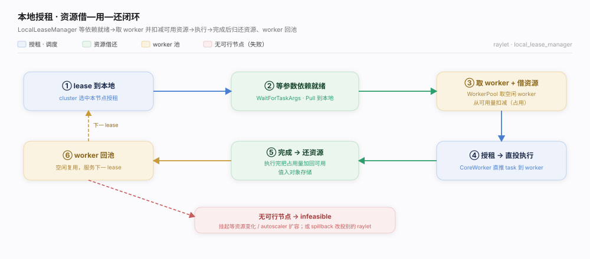
src/ray/raylet/scheduling/cluster_lease_manager.cc、local_lease_manager.cc、policy/hybrid_scheduling_policy.cc、src/ray/raylet/node_manager.cc（commit 2a70ac4）。依赖「资源管理与放置组」（资源视图）、「全局控制存储 GCS」（集群资源上报）。SPREAD 分散副本、NodeAffinity 钉节点、PlacementGroupSchedulingStrategy 绑资源包。| 技术点 | 机制 | 源码锚点 |
|---|---|---|
| lease 入口 | Raylet 处理租 worker 请求 | node_manager.cc:1890 |
| 集群级入队调度 | QueueAndScheduleLease | cluster_lease_manager.cc:45 |
| 全集群选点 | GetBestSchedulableNode | cluster_lease_manager.cc:195/213 |
| spillback 改投 | 回 retry_at_raylet_address | cluster_lease_manager.cc、normal_task_submitter.cc:314 |
| 本地授租 | 等依赖就绪 + 取 worker | local_lease_manager.cc:126 |
| 节点打分 | 关键资源利用率 score | hybrid_scheduling_policy.cc:45/48 |
| 打包/铺开拐点 | spread_threshold | hybrid_scheduling_policy.cc:56/183/189 |
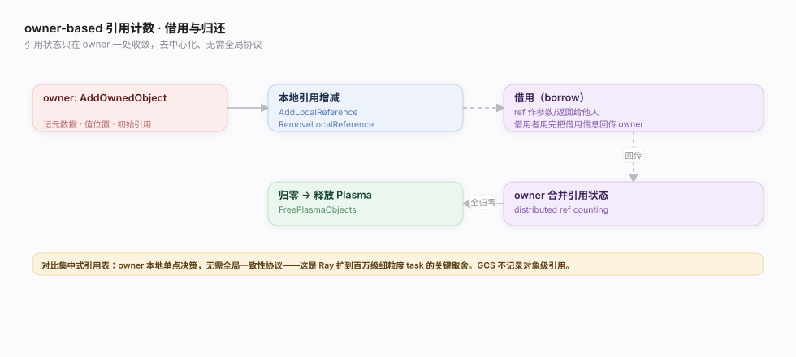
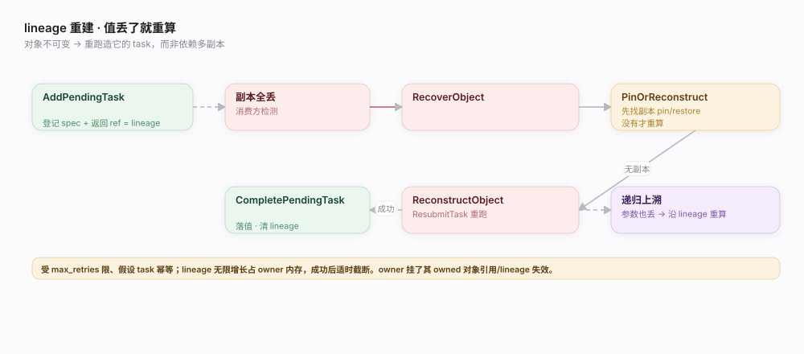
ReferenceCounter 里独立维护该对象的引用计数、值所在位置与创建它的 task lineage。引用归零则回收，值丢失则按 lineage 重算——全程去中心化，GCS 不参与对象级引用，这是 Ray 扩到百万级 task 的根基。核实基准 src/ray/core_worker/reference_counter.cc、object_recovery_manager.cc、task_manager.cc（commit 2a70ac4）。支撑「远程任务与对象」「Actor」「分布式对象存储」。ray.put 或 checkpoint 关键中间结果，截断重算链。max_retries 限、假设幂等；副作用 task 重算可能出错。| 技术点 | 机制 | 源码锚点 |
|---|---|---|
| 登记 owned 对象 | 元数据 + 值位置 + 引用 | reference_counter.cc:223/349 |
| 本地引用增减 | 作用域进出 | reference_counter.cc:421/466 |
| 借用与回传 | 跨进程 distributed ref counting | reference_counter.cc:122/129 |
| 归零释放 Plasma | FreePlasmaObjects | reference_counter.cc:719 |
| lineage 登记 | AddPendingTask 记 spec+ref | task_manager.cc:319 |
| 丢失恢复入口 | RecoverObject | object_recovery_manager.cc:24 |
| 先副本后重算 | PinOrReconstructObject | object_recovery_manager.cc:93/140 |
| 按 lineage 重放 | ResubmitTask（可递归上溯） | task_manager.cc:433、object_recovery_manager.cc:169 |
| 落值清账 | CompletePendingTask | task_manager.cc:1158 |
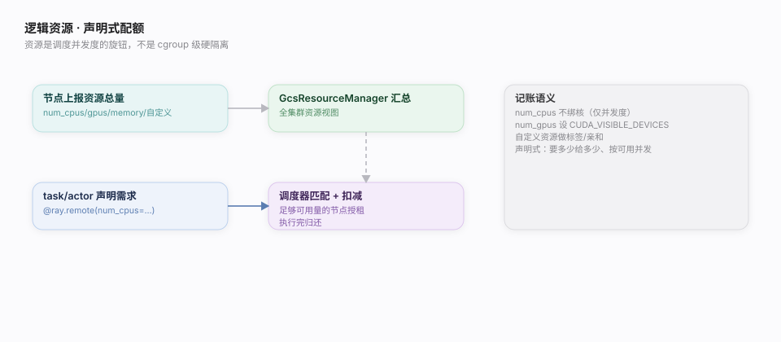
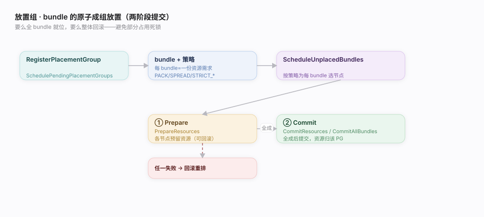
src/ray/gcs/gcs_placement_group_manager.cc、gcs_placement_group_scheduler.cc（commit 2a70ac4）。依赖「全局控制存储 GCS」（PG 编排）、「分布式调度」（资源匹配），与「集群自动伸缩」互动（需求驱动扩容）。num_cpus 决定并发度；声明过大浪费、过小超订导致过载。GPU 任务显式 num_gpus。remove_placement_group，否则预留资源一直占用。| 技术点 | 机制 | 源码锚点 |
|---|---|---|
| 资源上报汇总 | 节点上报 → GcsResourceManager | gcs_server.cc:317/489 |
| 声明式需求 | num_cpus/num_gpus/自定义资源 | @ray.remote(...) |
| PG 注册 | RegisterPlacementGroup 落 GCS | gcs_placement_group_manager.cc:113 |
| PG 调度驱动 | SchedulePendingPlacementGroups | gcs_placement_group_manager.cc:306 |
| bundle 选点 | ScheduleUnplacedBundles 按策略 | gcs_placement_group_scheduler.cc:41 |
| 2PC-Prepare | 各节点预留资源（可回滚） | gcs_placement_group_scheduler.cc:196 |
| 2PC-Commit | 全成后提交 | gcs_placement_group_scheduler.cc:229/341 |
| 放置策略 | PACK/SPREAD/STRICT_* | gcs_placement_group_scheduler.cc:540-544 |
| 创建成功回调 | 通知等待方可用 | gcs_placement_group_manager.cc:252 |
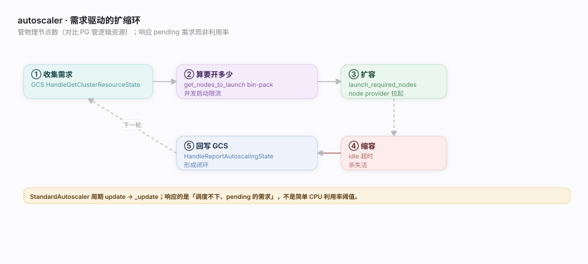
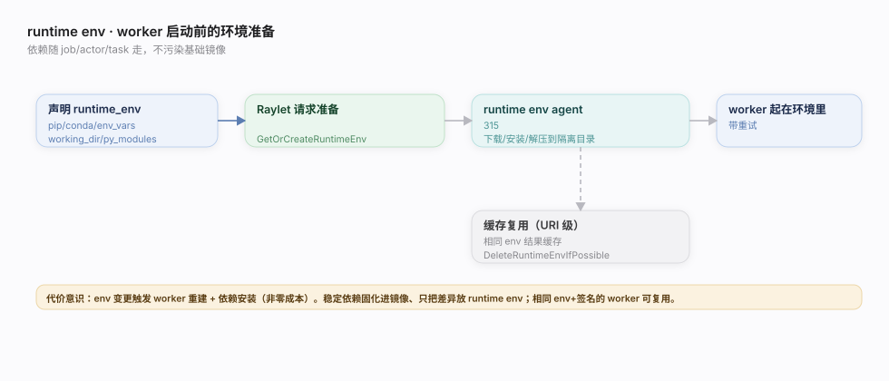
python/ray/autoscaler/_private/autoscaler.py、resource_demand_scheduler.py、src/ray/gcs/gcs_autoscaler_state_manager.cc、python/ray/_private/runtime_env/agent/runtime_env_agent.py、src/ray/raylet/runtime_env_agent_client.cc（commit 2a70ac4）。| 技术点 | 机制 | 源码锚点 |
|---|---|---|
| autoscaler 控制环 | update → _update 周期驱动 | autoscaler.py:172/367/379 |
| 需求/供给汇总 | GCS 暴露集群资源状态 | gcs_autoscaler_state_manager.cc:51 |
| 算扩容节点 | bin-pack pending 需求 | resource_demand_scheduler.py:167/388 |
| 拉起节点 | node provider 扩容 | autoscaler.py:736 |
| 缩容/杀失活 | idle 超时 + 健康检查回收 | autoscaler.py:475/1239 |
| 决策回写 | ReportAutoscalingState | gcs_autoscaler_state_manager.cc:67 |
| env agent 准备 | GetOrCreateRuntimeEnv 装依赖 | runtime_env_agent.py:165/315/371 |
| Raylet 请求准备 | 客户端 GetOrCreateRuntimeEnv | runtime_env_agent_client.cc:369 |
| env 引用清理 | 无引用时删缓存 | runtime_env_agent.py:551 |